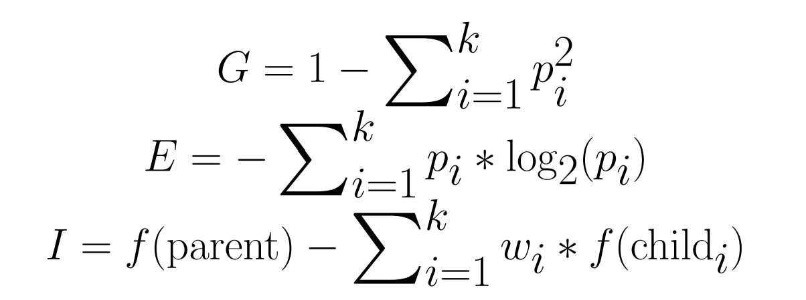
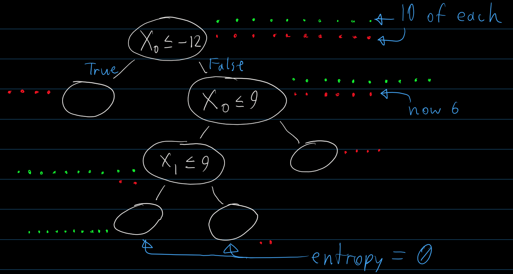
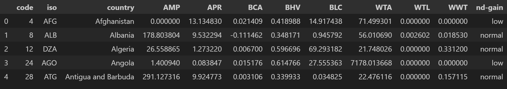
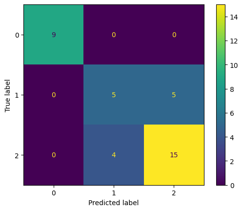
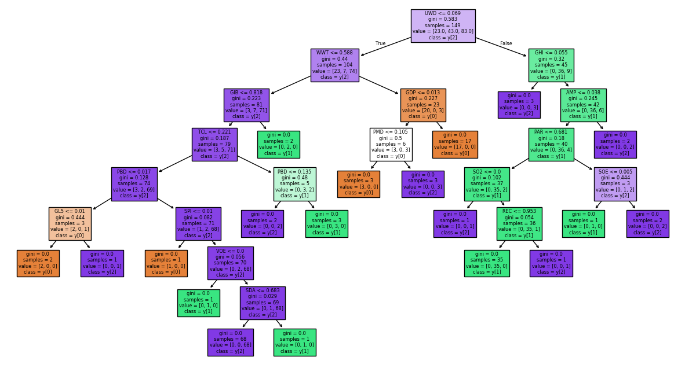
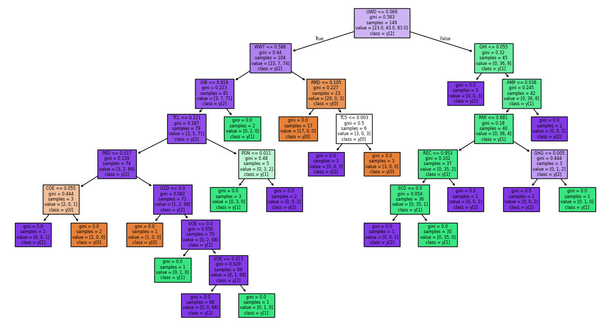
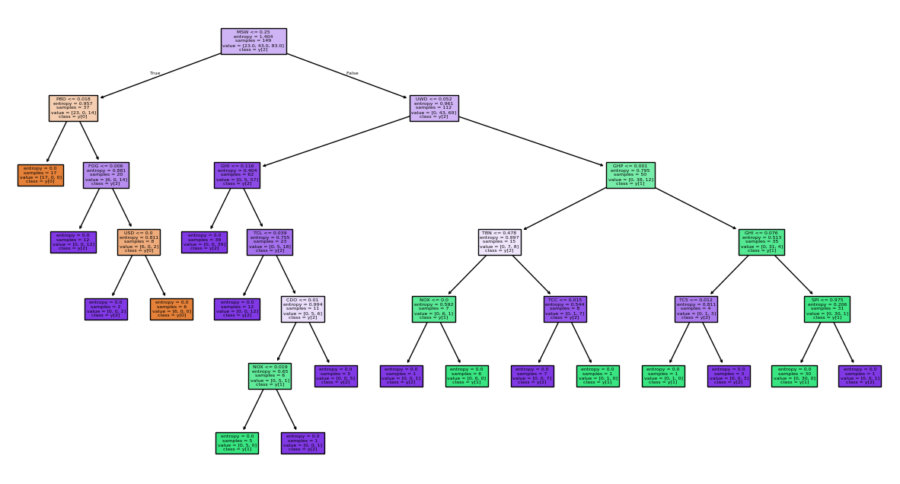

CSCI 5612 Machine Learning for Data Science:
Regional Climate Factor Analysis:
Decision Trees
Overview
Decision trees are a method of supervised learning that create "decision splits" to partition data between classes. Splits will often lead into further splits, allowing decision tree models to become arbitrarily precise, or overfitted. Decision splits can be made on a variety of data types, including numerical and categorical features. Data points located at leaves within the tree are considered classified, having followed a series of decisions.
The choice of splits is handled by the decision tree algorithm.
There are two common metrics for how splits are chosen:
• GINI, which uses the probability of a random data point being labeled semi-randomly to measure the impurity of a split.
• Entropy, which uses counting and a logarithmic alteration to measure the uncertainty of a split.
Both of these metrics can then be used to determine information gain. This is a measure of the improvement that a split makes on the purity of the dataset passed through the tree. Information gain takes into account the dataset before a split and its distribution between each of the paths that result from a split. Below are the formulas for each of these metrics.

k = number of possible classes
p_i = proportion of examples in class i
f() = the impurity function, either GINI or entropy
w_i = size of child set divided by size of parent set
As an example, the drawing below shows a simplified view of a dataset being passed through a decision tree.

Following the first split made, the entropy of the dataset before the split is 1, showing maximum entropy is achieved with an even mix of data points. Next, the entropy of the left child is 0, showing minimum entropy, and the entropy of the right child is 0.85, showing that further splits should be made. Combining these metrics into an information gain value returns 0.32. Many other decisions could be tested to find a higher information gain value, which would result in a better split for the tree.
Additionally, decision trees can generally be made in an infinite number of ways. This results from a few factors. First, decision splits made on numeric values can have arbitrarily precise conditions, such that ">= 30" can be used as well as ">=30.05". Second, decision splits made with numerous categorical values can be made in a highly variable number of ways. Third, the sequence of decision splits is not fixed, such that "inefficient" splits may be made that, with some rearranging, would not be needed.
Data Preparation
This operation makes use of a slightly updated dataset from that used in the unsupervised methods.
The dataset has an additional column (the "target variable") that lists the ND-GAIN Index for each country.
This is a score of each country's vulnerability and readiness for climate change effects, developed by the Notre Dame Global Adaptation Initiative using their own methods.
In order for these scores to be usable for classification, they are instead encoded as follows:
• A score between 60-100 means "low" risk
• A score between 40-60 means "normal" risk
• A score between 0-40 means "high" risk
The record of scores for 2022 were incomplete, meaning the number of countries in the current dataset is reduced from 220 to 187.
The new data was sourced from here:
https://gain.nd.edu/our-work/country-index/

In addition to the labeled data, supervised learning requires datasets to be split into training and testing sets. Doing so enables a model to be trained on one and have it accuracy be tested on the other. If the splits were not created, there would be no reliable method to determine how accurate the trained model really is.
Code Implementation
The code used to perform decision tree classification can be found in this file:
https://github.com/Machoo/Regional_Climate_Factor_Analysis/blob/main/decision_tree.ipynb
Results
The completed decision tree classifier has relatively poor performance. Using GINI for impurity, the accuracy, f1, and recall scores were all 76%. This value is fairly low, and using entropy for impurity brought the scores near 60%.

The value 1 corresponds to "low", 2 to "normal", and 0 to "high".
The confusion matrix above uses the GINI metric, as it produces much better results than the entropy metric. However, the results are still sub-par in terms of accuracy. Predictions around the "normal" category were incorrect overly frequently, while predictions for "high" risk were entirely correct. This variation indicates that the decision tree model is highly subject to how decision splits are made, with the random seed provided as a factor. The tree that produced the confusion matrix above, as well as two others with different hyperparameters, are shown below.



Conclusion
The decision tree model seems to be a poor fit for this dataset. The results from testing multiple trees shows that hyperparameter tuning would be a particularly large effort to make this type of model performative. However, this case does illustrate that a random forest model could be used to improve performance by removing the concerns of randomness and hyperparameter tuning. Regardless, the current state of the decision trees means that no reliable insights can be drawn from them.